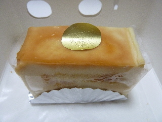
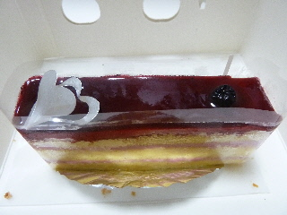
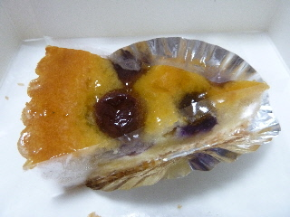

モントローネ田和山店は8周年でした。
2013/09/01
松江のモントローネは8周年記念で、ショートケーキが全品189円でした。
お買い得なので、色々買いました。



みんな小さいケーキなんですが、とっても甘いので食べごたえありました。
うん。美味しい。
島根県松江市田和山町18
2013/09/01
松江のモントローネは8周年記念で、ショートケーキが全品189円でした。
お買い得なので、色々買いました。



みんな小さいケーキなんですが、とっても甘いので食べごたえありました。
うん。美味しい。
2008/4/30
噛むと番茶の細かい粉が歯に当たる食感が気になりましたが、それはそれで番茶らしくていいかなって思いました。食べてるうちにだんだん気にならなくなしましたし。
番茶味のロールケーキって初めて食べたんですが、意外と美味しいものですね。
個人的には抹茶味よりも好きかも。
抹茶ほど爽やかさはないですが、いい感じに渋味があるので味わい深いですね。
番茶味が効いているので、クリームが甘くなり過ぎず、油こくもなく、後味が抜群に良かったです。
2007/3/10
あっさりめのチョコのスポンジに、オレンジソースが乗って、その上にムースが乗ったケーキです。
チョコとオレンジの組み合わせはわりと好きなので、美味しくいただきました。
ケーキにフォークを入れた時、オレンジのソースが圧力で外側に寄っていくので、最初と最後の味がだいぶ違う味になりました。食べる時は注意したほうがいいですね。
最初はあっさり甘酸っぱいオレンジ味だったのが、最後には甘さがとっても濃くなってしまいました。
2005/9/19
松江市田和山町にある、モントローネのケーキを食べました。
食べたケーキは、お店の名前と同じ名前の「モントローネ」ってケーキと「ナポレオン」です。
「モントローネ」は栗のケーキ（モンブランじゃなくて、栗のショートケーキの味に近いです。）で、「ナポレオン」はキャラメル味のケーキでした。
両方ともふわふわのスポンジにクリームたっぷりで、やわらかくてあま～いです。
あま～いケーキなんですけど、クリームが濃くて甘いってわけじゃなくて、クリームがいっぱいで甘いので、とっても食べやすく美味しかったです。
近くのパン屋さん
【森のくまさん松江店】